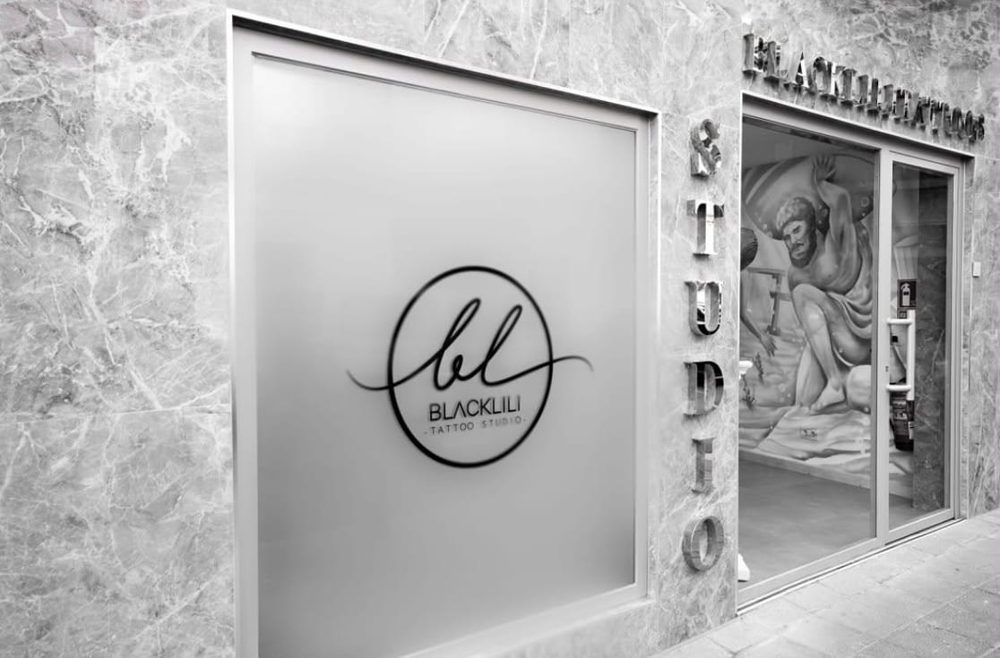
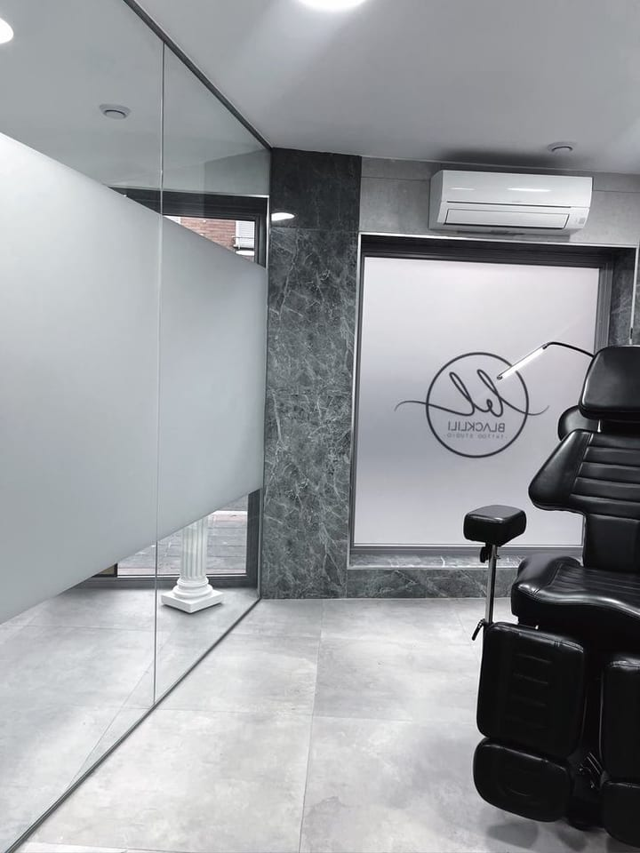
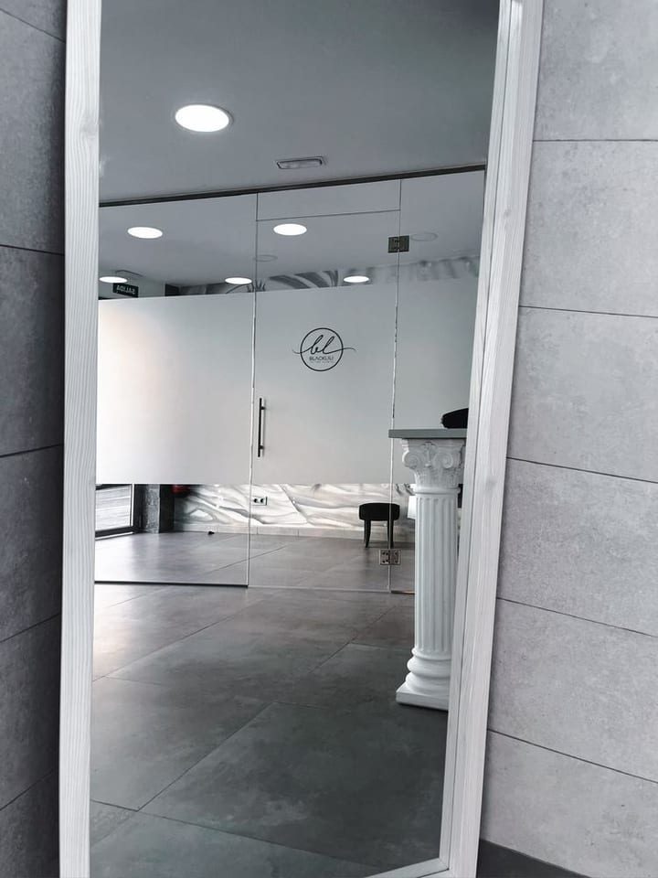
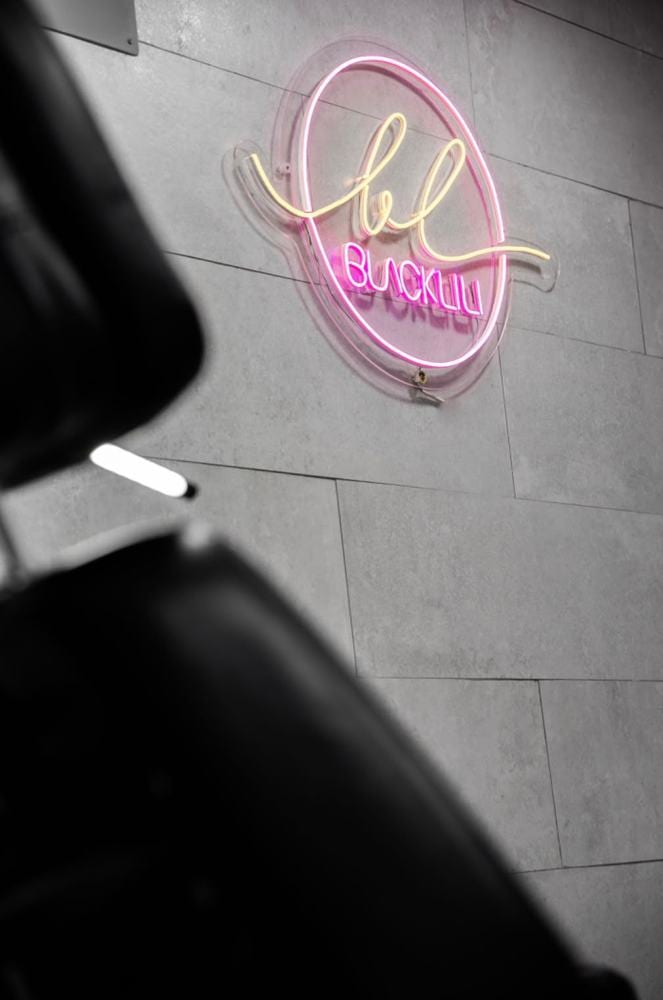

Estudio de tatuajes de línea fina en Puente de Vallecas, Madrid. El trazo fino
que se queda
contigo.
Diseños detallados, líneas delicadas y un trazo que se adapta a la forma exacta de tu cuerpo. Tatuaje de línea fina con un acabado limpio, preciso y sofisticado.
★★★★★Me especializo en tatuajes de línea fina, diseños detallados y trazos delicados que se adaptan a la forma de tu cuerpo con total elegancia. Lidia · BlackLili Tattoos
Un espacio para pensar
tu tatuaje con calma.
Cada sesión empieza con una conversación: tamaño, ubicación, tipografía, grosor de línea. Nada se tatúa sin que antes lo hayas visto y sentido tuyo. El resultado es un trazo limpio, preciso, con un toque sofisticado.

Un espacio cuidado hasta el último detalle.



Lo que dicen quienes
ya llevan su línea.
«Llevo ya seis tatuajes con ella y no puedo estar más contenta. Cada línea sale exactamente como la imaginaba.»
«El mejor estudio si buscas línea fina de verdad. Desde el primer momento me hizo sentir súper cómoda.»
«Probamos varios diseños, tamaños y tipografías sin ninguna prisa. Los tatuajes quedaron perfectos.»
«No dolió nada y nos dedicó muchísimo tiempo. Sin duda, la mejor de la zona.»
«De lo mejorcito que hay en Vallecas. Súper atenta, y sus trabajos, impecables.»
«Talento increíble y una mano súper delicada. El proceso se siente tan cuidado como el resultado.»
¿Lista para tu próxima línea?
Cuéntanos tu idea por Instagram o por teléfono. Hablamos de tamaño, ubicación y diseño antes de coger la aguja.